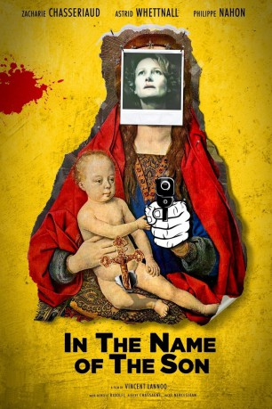

#5160 In the Name of the Son
 
 IMDB-Wertung: 6.4 / 10
IMDB-Wertung: 6.4 / 10  Metascore: 0
Metascore: 0 
Elisabeth ist glückliche Mutter sowie eine geistreiche und gläubige Frau. Sie ist Moderatorin einer beliebten Radioshow auf dem katholischen Radiosender "Christian Hope Radio" und opfert sich für die eigene Familie und das Leid der Welt auf. Sie heißt den jungen italienischen Priester Achille in ihrem Haus willkommen und behandelt ihn wie einen Teil ihrer eigenen Familie. Aber ihre heile Welt bricht zusammen, als sich herausstellt, dass ihr Mann einige Geheimnisse zu haben scheint. Doch das ist bei weitem noch nicht das Schlimmste: Vater Achille entpuppt sich als Pädophiler, der eine besondere Vorliebe für ihren ältesten Sohn hat. Als dann noch ein Kind Selbstmord begeht, versucht Elisabeth, den Priester bei der Kirche anzuprangern. Aber die Geistlichkeit tut nichts, um ihr zu helfen. Mit Blick auf die Ignoranz um sich herum sieht Elisabeth keinen anderen Weg, als einen gewaltsamen Rachefeldzug zu starten...
Jahr: 2012
Dauer: 80 Minuten
FSK: 16
Land: Belgien Studio: Drop-Out CinemaTonspuren:
Untertitel:
Auflösung: 1080p (1920x808) Größe: 3962 MB
Genre: Drama
Regisseur: Vincent Lannoo
Drehbuch: Liselotte Welskopf-Henrich
Soundtrack:
Darsteller:
- Astrid Whettnall als Elisabeth
 Philippe Nahon als Père Taon
Philippe Nahon als Père Taon- Marie-Jeanne Maldague als La mère de Marc
- Achille Ridolfi als Achille
- Albert Chassagne-Baradat als Albert l'évêque
- Zacharie Chasseriaud als Jean-Charles
- Lionel Bourguet als Charlebois
- Serge Swysen als Marc
- Jacky Nercessian als L'évêque
- Dominique Baeyens als La sainte
- Geneviève Baerten als Christine
- Albert Goldberg als Le Puissant
- Carlo Ferrante als Réalisateur radio
- Grégoire Baldari als Le père de Marc
- Benoît Van Dorslaer als Olivier
- Denis Mpunga als Abbé Luangi
- Jean-Louis Cremers als François Castel
- Pierre Lekeux als Père d'Arzac
- Bernard Boudru als Père Mollenthiel
- Christelle Delbrouck als Femme para
- Christiane Rorato als La mamma
- Théo Dardenne als Garçon église 1
- Lucas Moreau als Garçon église 2
- Titouan Joye als Enfant baptême
- Bernard Garant als Adulte baptême
- Philippe Grand'Henry als Curé
- Patricia Sterlin als
- Lucas Lunt als
- Jean-Claude Jadot als
- Frederic Etherlinck als
Datei: X:\2012(G-M)\In the Name of the Son (2012, FSK16, 1920x808).mkv seit 27.12.2016
Festplatte: HD 2012(A-M)
 Es gibt insgesamt 112 Filme in der Gruppe '2012(G-M)'
Es gibt insgesamt 112 Filme in der Gruppe '2012(G-M)'